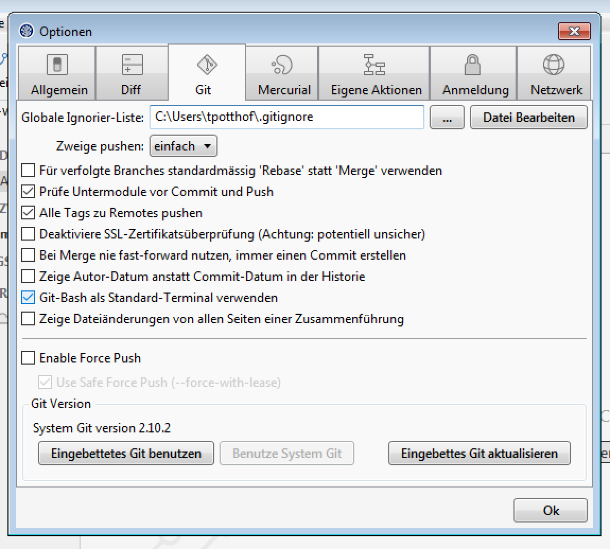

Basic Commands
git init|add|rm|commit|status|log|config
Create a local repository
mkdir git-hello-world
cd git-hello-world
git init
ls -la # Windows: dir
git status
Create, add and commit files
echo "hello world" >> hello-world.txt # unix only
git add hello-world.txt
git status
git rm hello-world.txt
git rm --cached hello-world.txt
git add hello-world.txt
git commit -m "my first commit"
Configure user
git config --global user.email "myemail@example.com"
git config --global user.name "My Username"
# Overwrite commit with changed user
git commit --amend --reset-author
# Show local and global config
git config --local --list
git config --global --list
Help and log
git help log
git log # Where is the revision number? (Short Hash)
# Short log
git log --oneline
# Filter logs by author
git log --author="Tilman Potthof"
# Log with custom format
git log --pretty=format:"%h %s"
# Einzeilige Darstellung
git log --pretty=oneline
Help for all commands
git help <command>
The Staging Area


Commands
git add|reset|checkout|diff
Status and changes
git status
# Modify file
git status
git diff
# Add file to git
git add <filename>
git status
git diff
# Reference HEAD or hash
git diff -r head
git diff -r <hash>
Reset changes
git status
# Reset
git reset <filename>
git status
# Check file content
# Reset to HEAD
git reset head -- <filepath>
# Verwerfen von untracked Änderungen
# Testlauf
git clean -n
# Ausführen
git clean -f -d
Revert unstaged changes
git status
# Revert changes in a file
git checkout <>
git status
# Check file content!
# Reference HEAD or hash
git checkout head <filepath>
git checkout -r <hash> .
Other commands Befehle
# Commit all tracked files
git commit -a -m "Wichtiger commit"
# Add changes interactivly
git add -p
Ignorieren von Dateien
Lokale .gitignore Datei
Im Root-Verzeichnis des Repositories
.project
.settings/
.classpath
target/
Globale .gitignore Datei
In globale
.gitconfig eintragen.
git config --global core.excludesfile
Konfiguration über SourceTree
Commands
git clone|pull|push|(fetch)|remote
Clone
git clone https://github.com/tilmanpotthof/git-workshop-englishPush/Pull
# Preparation: Add and commit some changes
# Push you changes to the server (origin/master)
git push origin master
git push ## Short form (only for origin)
# Pull changes from the server
git pull # (origin master)
Add another remote repository
git remote -v
git remote add github-public https://github.com/tilmanpotthof/git-workshop-english
git pull github-public master
Other commands
git fetch -p
git fetch -p github-public
Fundamentals III
Branching / Merging
Commands
git branch|merge|rebase
Create a branch
git checkout -b my-new-branch
# -b is a short hand for two commands
git branch my-new-branch
git checkout my-new-branch
# Show branches
git branch
git branch -a
# Alle Remote Branches anzeigen
git branch --remote
Remote branches
git checkout name-of-the-remote-branches
# Map remote branch to different local branch name
git checkout -b my-local-branch origin/my-new-branch
# Create and push a local branch to origin
git checkout -b another-new-branch
git push -u origin another-new-branch
Delete Branch
git branch -d my-new-branch
git branch -D my-new-branch
Create a branch using Bitbucket

Branch overview

Merge
git checkout master
git merge my-new-branch
git merge --no-ff my-new-branch
Rebase (Demo)
git clone https://github.com/tilmanpotthof/git-rebase-example
git checkout linear-modified-history
git rebase master
git merge linear-modified-history